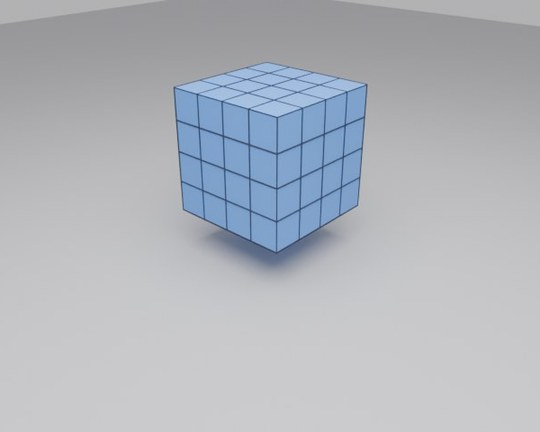
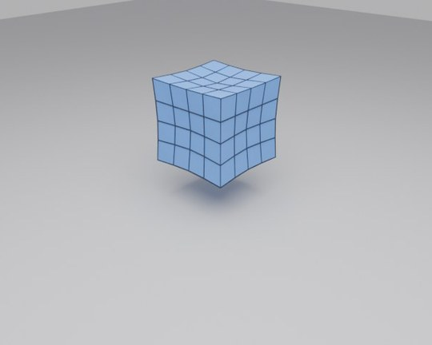
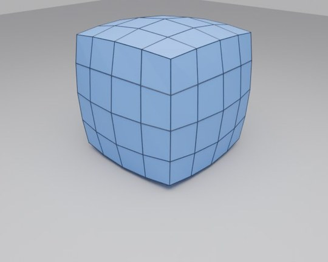

Bonus lesson
Push/Pull
Push/Pull moves the selected parts of a mesh closer to a point, or further away from it, and every selected vertex moves by the same distance. It works in Object Mode and Edit Mode. Find it under Transform › Push/Pull in the Object or Mesh menu, or in the Toolbar under the Shrink/Fatten tool.



How it works
Push moves the selection closer to the pivot point. Pull moves it further away. The distance is the same for every selected element, which is different from Scale, where far-away parts move more than near ones.
You can set the distance three ways: move the mouse up or down, type a number, or use the slider in the Adjust Last Operation panel.
In our test in Blender 4.5.17, a positive value moved the vertices closer to the center and a negative value moved them further away. That is why the middle picture is smaller and the right one is larger.
Read the manual page on Push/Pull.
Try it
This exercise is our own suggestion and has not been run step by step in the GUI. Add a cube, enter Edit Mode, press A to select everything, then subdivide it a few times so it has more vertices. Open the Mesh menu, choose Transform, then Push/Pull, and move the mouse up or down. Click to confirm, then try the slider in the Adjust Last Operation panel. Use Ctrl+Z to undo.